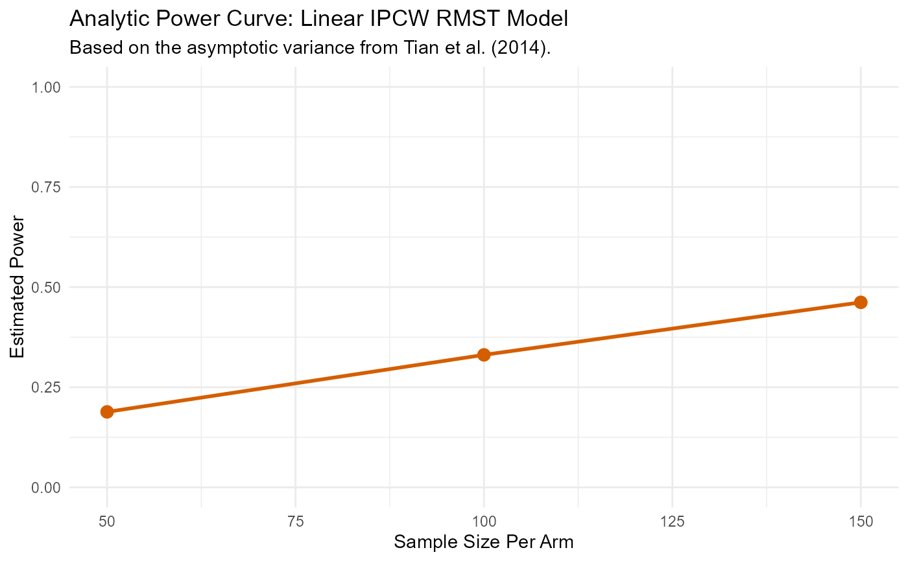

Routes a formula-based call to the matching RMST power routine.
Arguments
- formula
A formula of the form
Surv(time, status) ~ cov1 + cov2. Uses()wrapping (mgcv style) for smooth terms:Surv(time, status) ~ s(age).- data
A
data.framecontaining the reference (pilot) data.- arm
Character string naming the treatment arm column (binary 0/1).
- sample_sizes
Integer vector of per-arm (or per-stratum) sample sizes to evaluate.
- L
Numeric truncation time for RMST.
- strata
Character column name, one-sided formula (
~col), orNULL(default). Ignored whendep_cens = TRUE.- strata_type
One of
"additive"(default) or"multiplicative". Only used whenstratais non-NULLanddep_cens = FALSE.- dep_cens
Logical; use dependent-censoring model? Default
FALSE.- type
One of
"analytical"or"boot". Auto-switched with a message when the requested type is unavailable for the chosen model.- alpha
Significance level. Default
0.05.- n_sim
Number of bootstrap replicates (boot methods only). Default
1000.- parallel.cores
Number of cores for parallel processing. Default
1.
Value
An object of class c("rmst_power", "list") with elements
results_data, results_plot, results_summary,
model_output, and .meta.
Examples
data(aft_lognormal_L12_n150, package = "RMSTpowerBoost")
r <- rmst.power(Surv(time, status) ~ age,
data = aft_lognormal_L12_n150,
arm = "arm",
sample_sizes = c(50, 100, 150),
L = 12)
#> --- Estimating parameters from pilot data for analytic calculation... ---
#> Model: Y_rmst ~ factor(arm) + age
#> --- Calculating asymptotic variance... ---
#> --- Calculating power for specified sample sizes... ---
print(r)
#> ── RMST Power Analysis ──────────────────────────
#> Model : Linear IPCW (Analytical)
#> Formula : Surv(time, status) ~ age
#> Arm : arm
#> Truncation time : 12
#> Alpha : 0.05
#>
#> Power Results:
#> N_per_Arm Power
#> 50 0.08365565
#> 100 0.12692736
#> 150 0.16928696
#>
#> Treatment Effect (from reference data):
#> Estimand : RMST Difference
#> Estimate : -0.3007
s <- summary(r)
plot(r)
